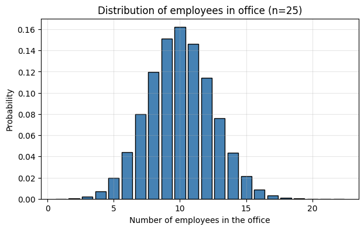
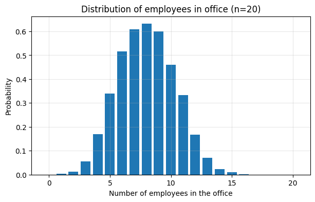
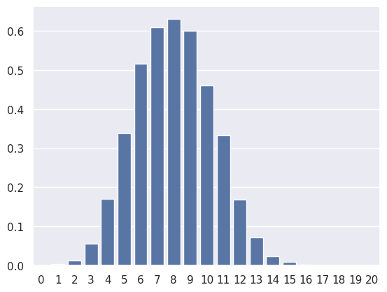

import numpy as np
import matplotlib.pyplot as plt
import pandas as pd1 Home Office Simulation
Write a python function that simulates the number of people present in an office when the n employees work from home 3 days a week and in the office 2 days. In particular, the results should be:
- Distribution of # employees in the office on a random day
For each simulated week:
Each of nnn employees randomly selects 2 distinct office days (from 5).
For each day, count how many employees chose that day.
Aggregate across simulations to approximate the distribution.
Plot a histogram
- Probability that two particular employees overlap ≥ 2 days
Hint: def HomeOfficeSimulation(n = 20, n_weeks = 1000, daysInWeek = 5, days_in_office = 2
For each simulated week:
Simulate their two chosen office days.
Count the overlap between them.
Record whether overlap ≥ 2.
Table of Content:
Skeleton code for desired function
Skeleton code for desired function:
def office_simulation(n=20, n_weeks=1000, seed=None, plot=True):
"""
Simulates office attendance given n employees each in-office 2 of 5 weekdays.
Parameters
----------
n : int
Number of employees.
n_weeks : int
Number of simulated weeks.
seed : int or None
Random seed for reproducibility.
plot : bool
Whether to plot the resulting distribution.
Returns
-------
dist : array
Empirical distribution of #employees present on a random day.
overlap_prob : float
Probability that two specific employees overlap >=2 days per week.
"""
rng = np.random.default_rng(seed)
days = np.arange(5)
day_counts = []
overlap_count = 0
for _ in range(n_weeks):
# Each employee randomly chooses 2 distinct office days
# Count how many employees come in on each day
# Overlap between two particular employees (say #0 and #1)
# Distribution of employees per day
if plot:
plt.figure(figsize=(7, 4))
plt.xlabel("Number of employees in the office")
plt.ylabel("Probability")
plt.title(f"Distribution of employees in office (n={n})")
plt.grid(alpha=0.3)
plt.show()
return dist, overlap_probFile "/tmp/ipython-input-3238389192.py", line 46 if plot: ^ IndentationError: expected an indented block after 'for' statement on line 33
Q: What is the avarge num employees in the office ?? (n=25)
A: 25 *(4/10) = 10
A: 8 or 10 or
n=25 90% the num will be between 5 and 16 “between 50% and 160%)
n = 2500 90% the num will be between ? and ?
“Bigger is better (risk)”
dist, overlap_prob = office_simulation(n=25, n_weeks=2000, seed=42)
print(f"\nP(two specific employees overlap ≥ 2 days/week): {overlap_prob:.4f}")
Distribution of # employees in the office on a random day:
1: 0.000
2: 0.000
3: 0.002
4: 0.007
5: 0.020
6: 0.044
7: 0.080
8: 0.120
9: 0.151
10: 0.162
11: 0.146
12: 0.114
13: 0.076
14: 0.043
15: 0.021
16: 0.009
17: 0.003
18: 0.001
19: 0.000
20: 0.000
21: 0.000
22: 0.000
P(two specific employees overlap ≥ 2 days/week): 0.0998One week, one employee:
import numpy as np
rng = np.random.default_rng()
#simulate 2 random days in the office
#rng.integers(1,6,2) # this could create duplicates
# WAIT We need to set replace = FALSE !! Because there should be no duplicates!
empChoice = rng.choice(np.arange(1,6),2, replace = False )
weekdays = np.zeros(6)
print(weekdays)
print(empChoice)
#weekdays[0] += 1
#weekdays[4] += 1
weekdays[empChoice -1 ] += 1
weekdays
[0. 0. 0. 0. 0. 0.]
[3 4]array([0., 0., 1., 1., 0., 0.])Now we go from one to n employees, so we need a loop !
n = 20
weekdays = np.zeros(5, dtype = "int")
NumEmpInOffice = np.zeros(n+1, dtype = "int")
for i in range(n):
empChoice = rng.choice(np.arange(1,6),2, replace = False )
weekdays[empChoice -1 ] += 1
NumEmpInOffice[weekdays] += 1
print(weekdays)
if np.sum(weekdays)!= 2*n:
print("sth. is wrong!") #sanity check!
NumEmpInOffice[10 4 9 10 7]array([0, 0, 0, 0, 1, 0, 0, 1, 0, 1, 1, 0, 0, 0, 0, 0, 0, 0, 0, 0, 0])Let us simulate MANY WEEKS !!
import numpy as np
import matplotlib.pyplot as plt
import pandas as pd
def HomeOfficeSimulation(n = 20, n_weeks = 1000, daysInWeek = 5, days_in_office = 2, seed=123, verbose = False):
rng = np.random.default_rng(seed)
NumEmpInOffice = np.zeros(n+1, dtype = "int")#this is a 1D array of length n+1
for j in range(n_weeks):
weekdays = np.zeros(daysInWeek, dtype = "int")#this is a 1D array of length 5
for i in range(n):
empChoice = rng.choice(np.arange(1,daysInWeek+1),days_in_office, replace = False )
weekdays[empChoice -1 ] += 1#this is of length 5 !!
#NumEmpInOffice[weekdays] += 1 #for each of 5 elements I increment by 1
for w in weekdays:
NumEmpInOffice[w] += 1
if (verbose):
print(weekdays)
#print(NumEmpInOffice)
print(pd.Series(NumEmpInOffice, index=range(n + 1)).to_dict())
if np.sum(weekdays)!= 2*n:
print("sth. is wrong!") #sanity check!
#we would like to return the probability !
#of course they have to add to one in total
return NumEmpInOffice/np.sum(NumEmpInOffice)
#return NumEmpInOffice/(n_weeks*5)#(n_weeks*daysInWeek)
one_sim = HomeOfficeSimulation(n = 6, n_weeks = 3, verbose = False)
np.sum(one_sim)np.float64(5.0)Probability that two particular employees overlap ≥ 2 days
one_sim = HomeOfficeSimulation(n = 2, n_weeks = 1000)
one_simarray([0.3572, 0.4856, 0.1572])x1 = [4, 7, -5, 3]#this is a 1D array
x2 = [3, 5, 6, 1]#this is a 1D array
x1 + x2# the "+" operator for lists is an append operation !!
np.array(x1) + np.array(x2)
np.array(x1) * np.array(x2)
#It seems useful that we need numpy in adddition to lists!
#Why would we need pandas on top of numpy !!
y1 = np.array(x1)
y1[1]#numeric indexing
#y1["Wednesday"]#numpy cannot handle other ways of indexing !
p1 = pd.Series(y1, index = ["Monday", "Tuesday", "Wednesday", "Thursday"])
p1["Wednesday"]
p1[["Wednesday","Thursday"]]
"Wednesday" in p1
"Friday" in p1
p1
p1.to_dict(){'Monday': 4, 'Tuesday': 7, 'Wednesday': -5, 'Thursday': 3}p1.array
p1.indexIndex(['Monday', 'Tuesday', 'Wednesday', 'Thursday'], dtype='object')one_sim = HomeOfficeSimulation(n_weeks= 500)one_sim = HomeOfficeSimulation(n=5, n_weeks= 2, verbose=1)[4 3 0 1 2]
{0: 1, 1: 1, 2: 1, 3: 1, 4: 1, 5: 0}
[2 2 2 2 2]
{0: 1, 1: 1, 2: 2, 3: 1, 4: 1, 5: 0}np.sum(one_sim)np.int64(6)Plots
What type of plot do we need ???
- Histogram ?? Maybe not because there is no need for binning !
- Simple bar plot !
#let us plot !!
plt.figure(figsize=(7, 4))
plt.bar(np.arange(n+1),one_sim)
plt.xlabel("Number of employees in the office")
plt.ylabel("Probability")
plt.title(f"Distribution of employees in office (n={n})")
plt.grid(alpha=0.3)
plt.show()
import seaborn as sns
sns.set()
sns.barplot(one_sim);
Debugging
Sanity check:
Do the probabilities add to one ?
Read up on pandas series
Write basic code to double check our indexing logic !
n=10
NumEmpInOffice = np.zeros(n+1, dtype = "int")
weekdays = [3,3]
#NumEmpInOffice[weekdays] += 1
for w in weekdays:
NumEmpInOffice[w] += 1
print(NumEmpInOffice)[0 0 0 1 0 0 0 0 0 0 0]Extensions
Fold the plotting code into the function
Make all “parameters” function arguments, e.g. days_in_a_week (5), days_in_office (2), …
Can you use this code “as is” for the following related questions:
Probability that two particular employees overlap ≥ 2 days
Birthday problem
2 pandas
data frames !!
!pip install gapminder
Requirement already satisfied: gapminder in /usr/local/lib/python3.12/dist-packages (0.1)
Requirement already satisfied: pandas in /usr/local/lib/python3.12/dist-packages (from gapminder) (2.2.2)
Requirement already satisfied: numpy>=1.26.0 in /usr/local/lib/python3.12/dist-packages (from pandas->gapminder) (2.0.2)
Requirement already satisfied: python-dateutil>=2.8.2 in /usr/local/lib/python3.12/dist-packages (from pandas->gapminder) (2.9.0.post0)
Requirement already satisfied: pytz>=2020.1 in /usr/local/lib/python3.12/dist-packages (from pandas->gapminder) (2025.2)
Requirement already satisfied: tzdata>=2022.7 in /usr/local/lib/python3.12/dist-packages (from pandas->gapminder) (2025.2)
Requirement already satisfied: six>=1.5 in /usr/local/lib/python3.12/dist-packages (from python-dateutil>=2.8.2->pandas->gapminder) (1.17.0)from gapminder import gapmindergapminder| country | continent | year | lifeExp | pop | gdpPercap | |
|---|---|---|---|---|---|---|
| 0 | Afghanistan | Asia | 1952 | 28.801 | 8425333 | 779.445314 |
| 1 | Afghanistan | Asia | 1957 | 30.332 | 9240934 | 820.853030 |
| 2 | Afghanistan | Asia | 1962 | 31.997 | 10267083 | 853.100710 |
| 3 | Afghanistan | Asia | 1967 | 34.020 | 11537966 | 836.197138 |
| 4 | Afghanistan | Asia | 1972 | 36.088 | 13079460 | 739.981106 |
| ... | ... | ... | ... | ... | ... | ... |
| 1699 | Zimbabwe | Africa | 1987 | 62.351 | 9216418 | 706.157306 |
| 1700 | Zimbabwe | Africa | 1992 | 60.377 | 10704340 | 693.420786 |
| 1701 | Zimbabwe | Africa | 1997 | 46.809 | 11404948 | 792.449960 |
| 1702 | Zimbabwe | Africa | 2002 | 39.989 | 11926563 | 672.038623 |
| 1703 | Zimbabwe | Africa | 2007 | 43.487 | 12311143 | 469.709298 |
1704 rows × 6 columns
gapminder["pop"]--------------------------------------------------------------------------- NameError Traceback (most recent call last) /tmp/ipython-input-3804389217.py in <cell line: 0>() ----> 1 gapminder.pop NameError: name 'gapminder' is not defined
#what is the average lifeExp in this data set ?
#1 numpy:
np.mean(gapminder["lifeExp"])
np.mean(gapminder.lifeExp)
--------------------------------------------------------------------------- NameError Traceback (most recent call last) /tmp/ipython-input-1945241234.py in <cell line: 0>() 1 #what is the average lifeExp in this data set ? 2 #1 numpy: ----> 3 np.mean(gapminder["lifeExp"]) 4 np.mean(gapminder.lifeExp) 5 NameError: name 'gapminder' is not defined
#simple summaries are often insufficient to convey the complexities of the data !
#at the very least we might want to split the average by some sort of group
#what is the average lifeExp per continent ?
byContinent = gapminder.groupby("continent")
byContinent["lifeExp"].mean()
#this is called pivoting in many other softwares| lifeExp | |
|---|---|
| continent | |
| Africa | 48.865330 |
| Americas | 64.658737 |
| Asia | 60.064903 |
| Europe | 71.903686 |
| Oceania | 74.326208 |